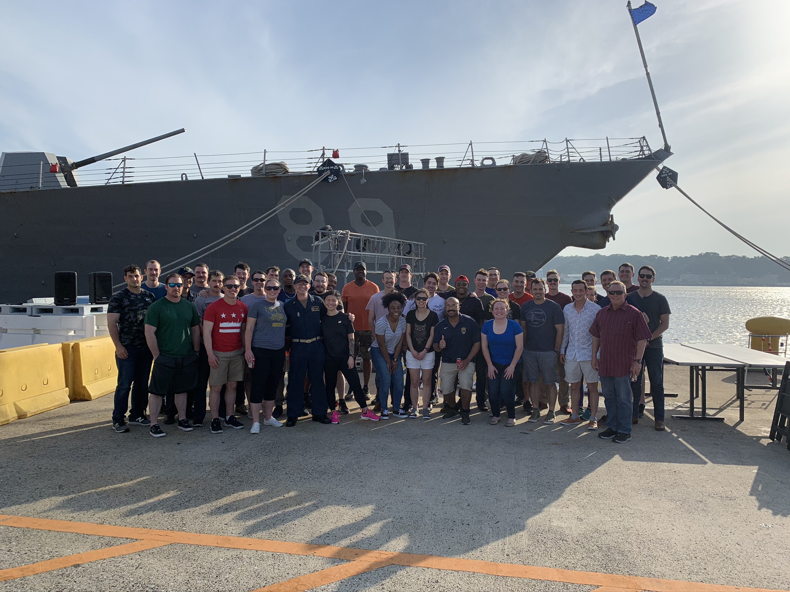

Hi, my name is
David O'Mullan.
I build cool things for the web.
I'm a software developer with a B.S. in Computer Science and Engineering from The Ohio State University. I speak Ruby (Rails), HTML & CSS, Jekyll and English. I am available for freelance work and full-time hire.

02 | About
Hello, my name is David O'Mullan! Born and raised in the suburbs of Chicago. Alumni of Ohio State where I earned my B.S. in Computer Science & Engineering. I served for four years as a US Naval Officer, stationed out of Yokosuka, Japan and Coronado, California. I am now returning to the world of professional software development.
Most recently I have completed several of the Learn Enough to be Dangerous courses, including Javascript and Rails. Check out my latest work on my personal GitHub page! I am available for freelance and collaborate work or full-time hire.
Check out my GitHub!
